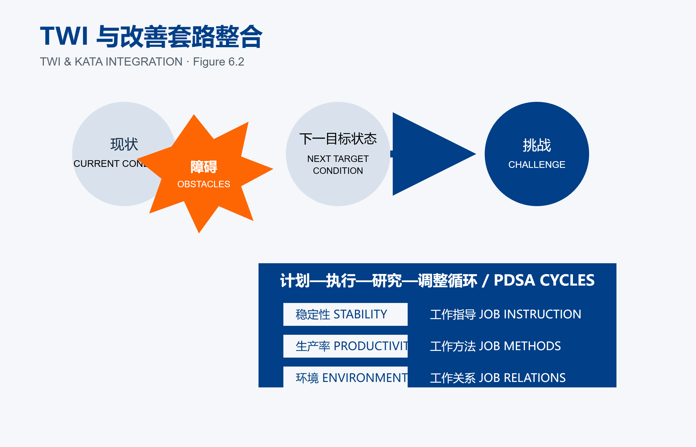
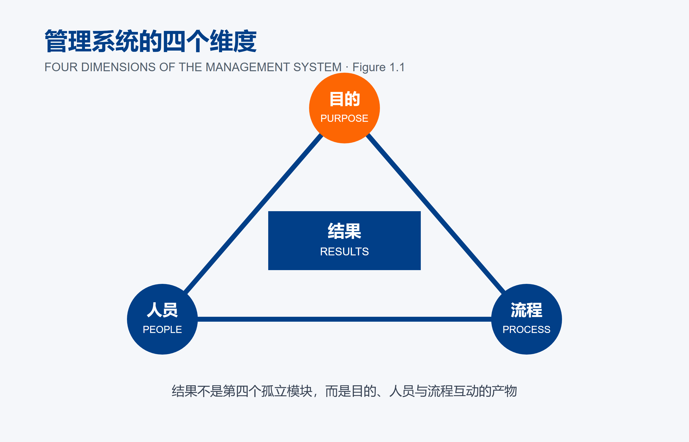
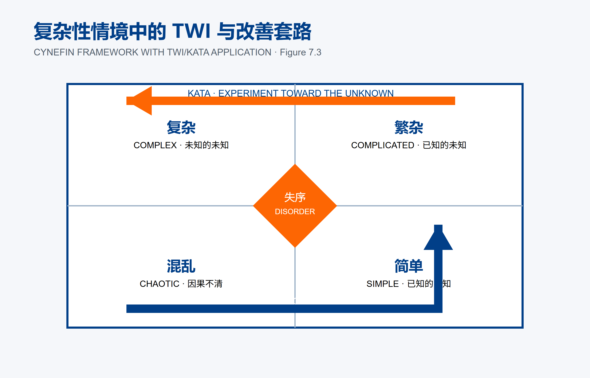

费老师拆书系列 · 第 7 本《创建有效管理体系》。把一本书读厚，再拆薄。 这一本 215 页，专治「每样工具都对，凑一起就是不转」。
为什么翻开它
费老师见过不少这样的企业：年初做方针展开，墙上有 A3；改善办公室推改善套路（Kata），现场有故事板；培训部门又上 TWI，主管手里有卡片。
每一样都没错。可三个月后回去看——目标还是目标，培训还是培训，改善还是改善，三条线各转各的，谁也没带动谁。
这个场面在中小企业里更常见，只是换了个规模：老板年初开会定了三件大事，生产经理自己在推 5S，人事年中安排了一轮岗位培训。三件事都在做，年底一算账，跟年初定的那三件大事一件也对不上。
这本《Creating an Effective Management System》问得更狠：如果工具都对，为什么装在一起还是不转？
Patrick Graupp、Skip Steward 和 Brad Parsons 没有再发明一种工具。他们做的事更朴素：把已有的三样东西接起来。
- 方针展开负责方向——把今年最重要的那件事，一层层传到班组；
- 改善套路负责学习——每天试一小步，用实验逼近目标；
- TWI负责能力——现场卡住的那个具体障碍，靠主管的技能当场解掉。
三者画成一组齿轮：方向从上往下传，障碍从下往上冒。 结果不是第四个部门交出来的，而是目的、人员和流程真的咬合之后，自己长出来的。

TWI 与改善套路的整合（费老师中英重绘）费老师提醒一句：多数企业不是缺齿轮，是三个齿轮各装各的，中间没有咬合面。方针写在纸上传不到班组，班组发现的障碍冒不上来，培训又跟眼前的障碍对不上号。
读厚：溯到源头
书的起点不是精益，而是Russell Ackoff的系统观。系统不能拆成互不相干的零件。一个部件对整体有什么影响，取决于其他部件正在干什么。
这句话放进企业特别扎心。方针管理单独看很完整，TWI单独看很扎实，Kata单独看也很科学。可若年度重点没有变成一线挑战，Kata只会优化局部；若现场发现障碍却没有主管技能，故事板只会积累问题；若培训没有接到真实障碍，TWI又会变成上完即忘的课程。
作者把管理系统拆成目的、人员、流程3个支点，结果在中间。不是“结果第一”，而是结果只能由前三者的互动产生。

管理系统四维（中英重绘）拆开：挑三个亮点
亮点一｜方针展开要接到每天的下一步实验。
书里某医院用Safe Room放最高层方针板，再通过部门短会、状态A3和一线Kata板层层连接。患者跌倒目标从50起降到25起，下面不是一句“加强安全管理”，而是高风险房间标识、≥65岁患者夜间床铃、床旁教育，并为每项活动定义过程指标。
最关键的不是分解，而是抛接球。下级不能只收任务，必须把能力、资源和现场信息传回去。目标在来回碰撞中，才从“领导的话”变成“我的挑战”。
换成中小企业最容易验证的一招:随便找个班组长问一句——“公司今年最重要的那件事是什么？你手上哪个动作跟它有关？” 答不上来，齿轮就是脱开的。这个测试不用花一分钱，五分钟能测完半个厂。
亮点二｜不要急着判断人，先判断障碍。
原书的模拟制造线要一年提升50%生产率，月底先把日产稳定到标准的95%以上。操作员没守住45秒节拍，主管最初以为不会做；训练后仍失败，又以为不愿做。直到用工作关系认真听，才知道工具太重、空间太窄，操作员还担心抱怨会丢工作。
团队随后用工作方法设计夹具、重排动作，再重新训练。五轮实验后，新方法连续 6 小时跑到班末。虽然这是原书明确标注的模拟故事，却把管理者最容易犯的错讲透了：在事实出现前，我们太爱给人下结论。
费老师在现场听到最多的三句话是「他不上心」「新人不行」「这批人素质差」。这三句的共同点是——都是在判断人，不是在判断障碍。而障碍往往极其具体:工具太重、位置太挤、上一道工序来料不齐、甚至只是他不敢说。
书里那张图把这件事画得很清楚:障碍的复杂程度不同，该动的工具也不同——标准不稳就用工作指导，方法有浪费就用工作方法，人与人之间卡住就用工作关系。

复杂性情境中的 TWI 与改善套路（费老师中英重绘）亮点三｜技能矩阵不能只画“谁会什么”。
书里的培训时间表不只写人名和技能，还写计划日期、首次验证、季度验证和技能等级。某定制窗制造商过去要160小时才能让新人上手，用工作指导后不到60小时，主管已经100%确认他掌握。
“参加过培训”和“能稳定做出结果”之间，差的正是验证。没有复核日期的技能矩阵，是培训部门的统计；有验证节奏的时间表，才是运营系统。
拆薄：搬进车间
费老师把整本书拆成6张表。
第一张《管理系统总览》，用目的、人员、流程和结果4列体检：目标是否能追到一线，行为是否符合原则，流程是否在日常节奏中被看见。
第二张《方针展开A3》，不是写口号，而是写差距、目标、假设、活动、过程指标、责任人与抛接球证据。
第三张《状态A3》，专门连接计划、预期、实际、学习和下一步。结果没到，不准只写“继续努力”。
第四张《工作方法分解》，照原书围术期抽血案例，把12步、500英尺往返拆开，逐项做消除、合并、重排、简化。
第五张《改善套路看板》，每个实验必须写预期与检查日期。没有预期，就没有假设；没有日期，就没有学习循环。
第六张《培训时间表》，把初训、首次验证、季度验证和技能等级连起来。
本月就能动手：给企业的五点实战建议
① 只追一条目标链。 选今年最重要的一项，从总经理追到班组，问每一层“你的工作怎样影响它”。哪里答不出来，哪里就是齿轮脱开。
② 给正在开的改善会补两列。 加上“我预期什么”和“何时检查”。别改系统、别立项目，明天的会就能开始。
③ 先给障碍分类，再拿工具。 标准不稳用工作指导；方法浪费用工作方法；抵触冲突用工作关系。坑是拿自己最熟的工具解决所有问题。
④ 给技能矩阵加验证日期。 每项关键技能至少有初训、首次验证和下一次复核。没有验证的人，不要因为“上过课”就标绿色。
⑤ 结果差时先问系统连接。 目标理解了吗？过程稳定吗？人被正确教会了吗？信息传回来了吗？先把4个问题问完，再讨论个人责任。
先后顺序上，费老师建议先做①，找出真实断点；再做②和③，让一个学习循环转起来；④用来把新方法固化；⑤则从本月第一场经营复盘开始，变成管理者的固定提问。
递给你
老规矩，把这本 215 页的书拆薄，收成一张能贴墙上的单子：
- 管理系统不是工具的总和，是部件之间的关系——一个部件对整体有什么影响，取决于其他部件正在干什么；
- 三样各司其职：方针展开负责方向，改善套路负责学习，TWI 负责能力——少一个，另外两个也转不动；
- 一线动作必须能解释自己怎样连接组织目标——随便问个班组长，答不上来就是齿轮脱开了；
- 抛接球不是走过场：下级不能只收任务，得把能力、资源和现场信息传回去，目标才会变成「我的挑战」；
- 不要先判断人，先到现场理解障碍——「他不上心」「新人不行」这类话，都是在判断人不是判断障碍；
- 先给障碍分类，再拿工具：标准不稳用工作指导，方法浪费用工作方法，抵触冲突用工作关系；
- 没有验证日期的技能矩阵，只是培训部门的统计——「参加过培训」和「能稳定做出结果」之间，差的正是验证；
- 维持成果不是守住旧答案，是守住持续学习的节奏——每个实验都要写清预期和检查日期，没有这两样就没有循环。
做工厂的、带团队的、搞运营的，都可借鉴哈。
想要文中 6 张表（管理系统总览 / 方针展开 A3 / 状态 A3 / 工作方法分解 / 改善套路看板 / 培训时间表）的朋友，公众号后台回复「系统」，费老师把空白版和完整示例版都发你——字段都预设好了，打印出来就能用。
📚 费老师拆书 · 已拆 7 / 首季 12 本 ✅ 欢迎问题，收获成功 ✅ 丰田参与方程式 ✅ 创建精益文化 ✅ 日常管理 ✅ 丰田式 Dantotsu 质量改善 ✅ 丰田持续改善之道 ✅ 创建有效管理体系 ⬜ 丰田生产系统手册 1973 ⬜ ……
齿轮不怕多，怕的是彼此不咬合。把方向、学习和能力接起来，管理系统才会真正转动。
——流动智造（FLOWSMART）× 流易数智（EASYFLOW） 费老师